1. WP 8和Win 8之间共享native代码
通过 Windows 运行时组件，可以在 Windows 应用商店和 Windows Phone 应用程序之间共享Native coad。由于windows phone 8和Windows 8没有共享所有的Windows运行时API，所以需要创建内容相似的 Windows 运行时和 Windows Phone 运行时组件项目，以利用跨这两个平台的代码。虽然不得不在解决方案中包含 Windows 运行时组件和 Windows Phone 运行时组件项目，但是这两个项目均以相同的 C++ 源文件构建。
Windows 8 和 Windows Phone 8 公开了 Windows 运行时 API 的一个子集。如果不想对两种平台分别写windows运行时组件，可针对该子集编写代码，然后借助VS提供的“添加为链接”功能在两种应用程序间共享。有关windows phone 8和Windows 8之间共享的Windows 运行时 API子集的详细信息参见Windows Phone 运行时 API，有关VS添加为链接功能参见使用“添加为链接”共享代码
Windows 运行时组件能够在 Windows 应用商店和 Windows Phone 应用程序之间共享本机 C++ 代码，是采用 C++ 编写计算密集型操作以实现最佳性能的理想选择。
.winmd 文件中包含的元数据公开了 Windows 运行时组件中的 API 定义。借助这些元数据，语言投射能够让所采用的语言自行决定如何在该语言中使用这些 API。下图列出了支持创建和使用 Windows 运行时组件的语言：
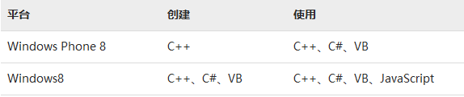
2. Windows Runtime Native代码支持
开发 Windows Runtime 的软件一般情况下都意味着开发的是托管代码。无论是在Silverlight中进行传统的应用程序开发，或者你决定在XNA中创建游戏，你从未离开过托管代码为您带来的舒适环境。虽然在通常情况下这会给你更多好处而非缺点，但是在有些情况下使用非托管的代码或许会是更加理想的。不幸的是，直到现在对于是否使用托管代码都不是一个开发者人员能够做出的决定，而是你的开发平台强加给你限制。
在Windows Phone 8和Windows 8中，Microsoft 开放了平台上对于非托管的第三方代码的限制，您可以使用 C++ 进行开发。介绍一下新平台的基础结构简化概要：
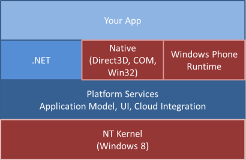
就像你所看到的那样，传统的 .NET开发(或者，就像它当时被称呼的那样，Silverlight) 是唯一的选项。现在，我们手头上拥有了一整套原生 API可以使用，我们可以自由选择何种编程模型最匹配我们的情况和要求。
2.1 做出决定
当我在工作或者培训的时候问别人有关他们对应该使用native代码而不是托管代码的背后原因时，90%的时候提到的第一个答案是性能。直到现在，开发者们还是认为使用native代码而不是使用C#进行开发的首要动机是性能。有趣的是，开发背景的差异似乎对这个判断没有多少影响。不光是那些C++背景的人这么想，还有那些比较初级的、没有在实际项目中用到过c++的人也这么认为。的确托管代码有它性能上的缺陷，在有些时候确实是我们做出决定时要考虑的因素。但是，事实上开发者们经常过高估计了使用native代码带来的好处。通常造成性能问题的不是托管代码和底层的runtime，而是因为糟糕的架构和软件的设计。在你要做的每一个方面都重新思考一下你的软件架构，并且仅仅通过转向另一种程序模型无法给你的应用程序带来显著的性能提升的时候，如果你认为用原生的C++来代替你Windows Phone/Windows8中的C#代码就能获得性能提升的话，请你最好三思。那绝对不是你应该做的事情，因为结果一定会让你大失所望。
这样，你可能会问自己使用native代码的可能的理由会是什么吗？下面是按降序优先级的排序列表。当然你的想法可能会有所不同，但它或多或少总是归结为的这些原因：
可重用性： 你有一些旧式类似的代码，你真的不想重写他们，但仍然想在您的应用程序中使用。
可移植性： 你想要在多个平台上使用你的代码。
个人喜好： 您是一个真心非常喜欢C++而不是C#的开发人员，并且你在C++中会更好的施展你的技能。
性能： 你真心需要者最后一点性能提升，并且知道自己正在做什么。
现在，我们已经谈了为什么时候native代码，下面该到了详细介绍如何使用它们的时候了。
2.2 仔细看看什么是可用的
首先，让我们看看我们在 Visual Studio 中的选项。当您查看 Windows Phone 和 C++ 的可用模板时，您可以看到的那些创建新应用程序非常侧重 Direct3D：
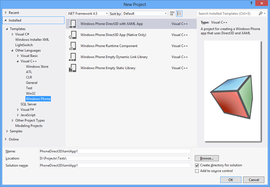
出人意料的是，创建一个"Direct3D 与 XAML" 的C++ 应用程序实际上会创建一个 C# 的主项目和一个单独的C++ Windows 运行时组件。这里的基本想法非常类似于在Windows Phone7中创建 XNA 和 Silverlight的混合程序： Silverlight 发挥了主要作用，并允许您在独立的页面上嵌入 XNA。就像Windows Phone 8 中提及的模板那样，主应用程序是基于Windows Phone上的.NET的，并使用XAML 中的特定控件(尤其是 DrawingSurfaceBackgroundGrid) 以类似的方式嵌入 Direct3D。然后在该示例中的实际呈现被传递给native组件。这种混合技术可能是典型使用案例： 它允许您既从XAML与托管代码的灵活性（例如用于菜单和其他详细信息）中受益，也同时从native代码中受益。
如果您想要创建一个与C#和托管代码没有任何关系的应用程序，您可以选择第二个模板，那个模板的名字上面已经有了"native only"的字样，然后就会创建出一个纯净的非托管应用程序。那里还有其他可用的 C++ 模板来创建库，可以动态或静态的链接到工程中，或者单独的 Windows Phone 运行时组件，我们接下来将会仔细研究。
2.3 关于代码间调用
关于在托管和非托管代码之间的通信，就像在 Windows 8 中，Windows Runtime使您可以让不同的技术以非常自然的方式互相交流。特别是，我们可以通过创建 Windows Runtime的简单包装，实现将非托管 c + + 实现集成到托管的应用程序中。他们可以很容易的融合与C#，并且非常像.net中的东西。
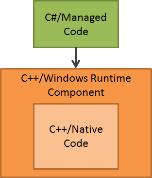
当你使用WinRT组件并与之交互时，几乎与使用正常的.NET类和对象一样。因为你不必再使用传统的像互操作或 COM 通信那种方法。
2.4 一个实际的示例
以下是利用这种 Windows 运行时组件的示例，你会看到如何可以轻松地集成现有的 c + + 代码到托管的 C# 应用程序中。首先，因为 c + + 应用程序模板非常侧重于 Direct3D，创建一个新的 C# XAML 应用程序。
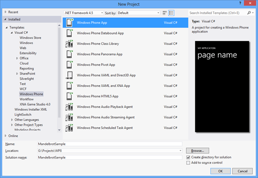
然后，在第二个步骤中，我只是将另一个项目添加到我的解决方案中，但这次我选择c + + "Windows Phone 运行时组件"模板。在这个项目被创建之后，我们将其引用添加到主项目。
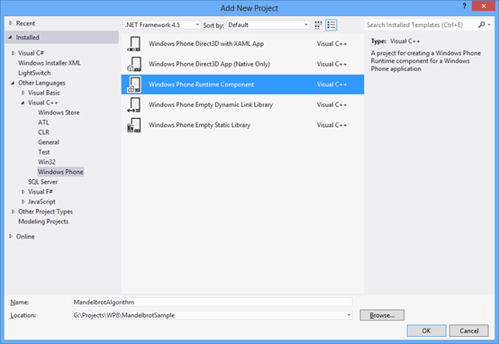
你们可以从截图中看到，我要重新使用现有的使用C++编写的Mandelbrot算法。这背后的动机可能是任何上述提到的各种原因： 此处是因为我发现了一些现有的代码，并且我简单地重复使用它来进行示范。但它很可能是一个我想要集成的、运算速度特别快算法，或者是一些我想要在多个平台之间共享的代码。
使用Windows Phone Runtime组件的代码是很容易解释的：
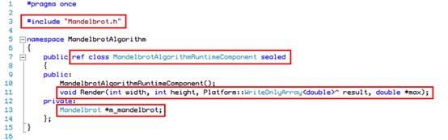
在第 3 行，包括现有的native代码希望使用的头文件。在 13 行，我声明了一个稍后可以使用的传统类型的成员。这两件事可能是任何其他 c + + 代码的一部分。
有关 Windows Runtime组件的更详细信息在第 7 行和第 11 行中突出显示。第一，类需要用"ref"关键字修饰，并且是一个sealed类。第一个告诉编译器这是一个需要特殊对待的 WinRT 类，后者只是对这类组件的一个技术限制。在行 11 您可以看到我之前说个的被包装的方法，他只是调用"Mandelbrot"算法的现有实现，其他什么也不做。但是，参数类型需要一些评论。正如您所看到的我正在使用的"WriteOnlyArray"是一种特殊类型，它确保native代码将能够写入该数组。该类型后面是一个类似与帽子的符号 (^)，可能会提醒你的托管 c + +。这是WinRT 类型自动引用计数符号。
很明显，当我将该调用传到原始的native实现时，将无法使用 WinRT 类型，因为原有代码根本不知道winrt类型。因此，我使用“数据”成员去访问我的原有代码能够理解的底层类型（此处是 double *）
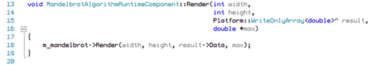
基本上是所有你所要做的：
创建您想要公开的所有功能的包装方法
请确保您的组件只使用公共 API中兼容的 WinRT 类型
后者，你应该看看映射的适当类型的可用文档，当然，编译器还会提示你在代码中的错误。
1.5 C# 调用WinRT 组件
正如前面提到，winRT组件使用者会感觉到管理开发是非常简单可自然的。您只需要添加引用到包含您的 Windows 运行时组件的项目，然后可以开始马上使用您的组件：
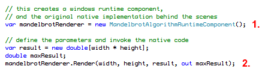
第一个突出显示的行 (1.) 创建 Windows 运行时组件的新实例，第二个标记的线 （2.）调用包装之后的方法，在被包装的方法内部调用原始的实现。这与使用普通的.NET 类型几乎没有区别 — — 这是在幕后为你把一切都译成普通的.NET 类型的 WinRT 的投影层的魔法。
在示例中，我继续把本地调用结果转换到 WriteableBitmap，然后在 XAML 页上显示
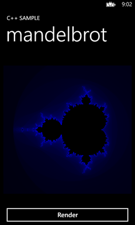
1.6 限制和机会
要注意的一件事是，显然不能使用在 Windows Phone 上不支持的具有特定的不兼容的依赖项的native代码，这在一定程度上限制了重用现有代码的可能性，尤其是当这些代码设计得并不是很好的时候。然而，可以使用native代码的能力也带来了很多之前被认为不可能的新的机会，例如，现在在这个平台上很容易创建一个像unity 3D 引擎这样有趣的工程，这反过来也使得该平台对开发者来说更具有吸引力。
2. Android NDK开发
2.1概述
对于大部分应用开发者来说可能都不怎么接触到NDK，但如果涉及到硬件操作的话就不得不使用NDK了。使用NDK还有另一个原因，就是C/C++的效率比较高，因此我们可以把一些耗时的操作放在NDK中实现。
关于java与c/c++的互相调用，网上有一大堆的文章介绍。但仔细观察可以发现，基本都是讲在java中调用一个本地方法，然后由该本地方法直接返回一个参数给java（例如，在java中定义的本地方法为private int callJNI(int i)）。但在大多数时候要求的并不是由开发者在java层主动去调JNI中的函数来返回想要的数据，而是由JNI主动去调java中的函数。举个最简单的例子，Android中的Camera，图像数据由内核一直往上传到java层，然而这些数据的传递并不需要开发者每一次主动去调用来JNI中的函数来获取，而是由JNI主动传给用java中方法，这类似于Linux驱动机制中的异步通知。
2.2要求
用NDK实现Java与C/C++互调，实现int，string，byte[]这三种类型的互相传递。
2.3实现
下面的实现中，每次java调用JNI中的某个函数时，最后会在该函数里回调java中相应的方法而不是直接返回一个参数。可能你会觉得这不还是每次都是由开发者来主动调用吗，其实这只是为了讲解而已，在实际应用中，回调java中的方法应该由某个事件（非java层）来触发。
新建工程MyCallback，修改main.xml文件，在里面添加3个Button，分别对应3种类型的调用和3个TextView分别显示由JNI回调java时传给java的数据。完整的main.xml文件如下：
修改MyCallbackActivity.java文件，定义了一个Handler，当JNI回调java的方法时，用来发送消息；实现3个Button的监听。如下：
1 package com.nan.callback;
2
3 import android.app.Activity;
4 import android.os.Bundle;
5 import android.os.Handler;
6 import android.os.Message;
7 import android.view.View;
8 import android.widget.Button;
9 import android.widget.TextView;
10
11
12 public class MyCallbackActivity extends Activity
13 {
14 private Button intButton = null;
15 private Button stringButton = null;
16 private Button arrayButton = null;
17 private TextView intTextView = null;
18 private TextView stringTextView = null;
19 private TextView arrayTextView = null;
20
21 private Handler mHandler = null;
22
23
24 /** Called when the activity is first created. */
25 @Override
26 public void onCreate(Bundle savedInstanceState)
27 {
28 super.onCreate(savedInstanceState);
29 setContentView(R.layout.main);
30
31 intButton = (Button)this.findViewById(R.id.intbutton);
32 //注册按钮监听
33 intButton.setOnClickListener(new ClickListener());
34 stringButton = (Button)this.findViewById(R.id.stringbutton);
35 //注册按钮监听
36 stringButton.setOnClickListener(new ClickListener());
37 arrayButton = (Button)this.findViewById(R.id.arraybutton);
38 //注册按钮监听
39 arrayButton.setOnClickListener(new ClickListener());
40
41 intTextView = (TextView)this.findViewById(R.id.inttextview);
42 stringTextView = (TextView)this.findViewById(R.id.stringtextview);
43 arrayTextView = (TextView)this.findViewById(R.id.arraytextview);
44
45 //消息处理
46 mHandler = new Handler()
47 {
48 @Override
49 public void handleMessage(Message msg)
50 {
51 switch(msg.what)
52 {
53 //整型
54 case 0:
55 {
56 intTextView.setText(msg.obj.toString());
57 break;
58 }
59 //字符串
60 case 1:
61 {
62 stringTextView.setText(msg.obj.toString());
63 break;
64 }
65 //数组
66 case 2:
67 { byte[] b = (byte[])msg.obj;
68 arrayTextView.setText(Byte.toString(b[0])+Byte.toString(b[1])+Byte.toString(b[2])+Byte.toString(b[3])+Byte.toString(b[4]));
69 break;
70 }
71 }
72
73 }
74
75 };
76
77
78 }
79
80 //按钮监听实现
81 public class ClickListener implements View.OnClickListener
82 {
83
84 @Override
85 public void onClick(View v)
86 {
87 // TODO Auto-generated method stub
88 switch(v.getId())
89 {
90 case R.id.intbutton:
91 {
92 //调用JNI中的函数
93 callJNIInt(1);
94 break;
95 }
96 case R.id.stringbutton:
97 {
98 //调用JNI中的函数
99 callJNIString("你好A");
100 break;
101 }
102 case R.id.arraybutton:
103 {
104 //调用JNI中的函数
105 callJNIByte(new byte[]{1,2,3,4,5});
106 break;
107 }
108 }
109 }
110
111 }
112
113
114 //被JNI调用，参数由JNI传入
115 private void callbackInt(int i)
116 {
117 Message msg = new Message();
118 //消息类型
119 msg.what = 0;
120 //消息内容
121 msg.obj = i;
122 //发送消息
123 mHandler.sendMessage(msg);
124 }
125
126 //被JNI调用，参数由JNI传入
127 private void callbackString(String s)
128 {
129 Message msg = new Message();
130 //消息类型
131 msg.what = 1;
132 //消息内容
133 msg.obj = s;
134 //发送消息
135 mHandler.sendMessage(msg);
136 }
137
138 //被JNI调用，参数由JNI传入
139 private void callbackByte(byte[] b)
140 {
141 Message msg = new Message();
142 //消息类型
143 msg.what = 2;
144 //消息内容
145 msg.obj = b;
146 //发送消息
147 mHandler.sendMessage(msg);
148 }
149
150 //本地方法，由java调用
151 private native void callJNIInt(int i);
152 private native void callJNIString(String s);
153 private native void callJNIByte(byte[] b);
154
155 static
156 {
157 //加载本地库
158 System.loadLibrary("myjni");
159 }
160
161 }最后就是本篇随笔的“重头戏”，在工程的根目录下新建jni文件夹，在里面添加一个Android.mk文件和一个callback.c文件，Android.mk文件如下：
1 LOCAL_PATH := $(call my-dir)
2
3 include $(CLEAR_VARS)
4
5 LOCAL_MODULE := myjni
6 LOCAL_SRC_FILES := callback.c
7
8 LOCAL_LDLIBS := -llog
9
10 include $(BUILD_SHARED_LIBRARY)callback.c文件如下：
1 #include
2 #include
3 #include
4 #include
5 #include
6 #include
7 #include
8 #include
9
10 #include
11 #include
12
13 #define LOGI(...) ((void)__android_log_print(ANDROID_LOG_INFO, "native-activity", __VA_ARGS__))
14 #define LOGW(...) ((void)__android_log_print(ANDROID_LOG_WARN, "native-activity", __VA_ARGS__))
15
16
17
18 /**********传输整数*************
19
20 */
21 JNIEXPORT void JNICALL Java_com_nan_callback_MyCallbackActivity_callJNIInt( JNIEnv* env, jobject obj , jint i)
22 {
23 //找到java中的类
24 jclass cls = (*env)->FindClass(env, "com/nan/callback/MyCallbackActivity");
25 //再找类中的方法
26 jmethodID mid = (*env)->GetMethodID(env, cls, "callbackInt", "(I)V");
27 if (mid == NULL)
28 {
29 LOGI("int error");
30 return;
31 }
32 //打印接收到的数据
33 LOGI("from java int: %d",i);
34 //回调java中的方法
35 (*env)->CallVoidMethod(env, obj, mid ,i);
36
37 }
38
39 /********传输字符串*************
41 */
42 JNIEXPORT void JNICALL Java_com_nan_callback_MyCallbackActivity_callJNIString( JNIEnv* env, jobject obj , jstring s)
43 {
44 //找到java中的类
45 jclass cls = (*env)->FindClass(env, "com/nan/callback/MyCallbackActivity");
46 //再找类中的方法
47 jmethodID mid = (*env)->GetMethodID(env, cls, "callbackString", "(Ljava/lang/String;)V");
48 if (mid == NULL)
49 {
50 LOGI("string error");
51 return;
52 }
53 const char *ch;
54 //获取由java传过来的字符串
55 ch = (*env)->GetStringUTFChars(env, s, NULL);
56 //打印
57 LOGI("from java string: %s",ch);
58 (*env)->ReleaseStringUTFChars(env, s, ch);
59 //回调java中的方法
60 (*env)->CallVoidMethod(env, obj, mid ,(*env)->NewStringUTF(env,"你好haha"));
61
62 }
63
64 /********传输数组(byte[])*************
65 */
66 JNIEXPORT void JNICALL Java_com_nan_callback_MyCallbackActivity_callJNIByte( JNIEnv* env, jobject obj , jbyteArray b)
67 {
68 //找到java中的类
69 jclass cls = (*env)->FindClass(env, "com/nan/callback/MyCallbackActivity");
70 //再找类中的方法
71 jmethodID mid = (*env)->GetMethodID(env, cls, "callbackByte", "([B)V");
72 if (mid == NULL)
73 {
74 LOGI("byte[] error");
75 return;
76 }
77
78 //获取数组长度
79 jsize length = (*env)->GetArrayLength(env,b);
80 LOGI("length: %d",length);
81 //获取接收到的数据
82 int i;
83 jbyte* p = (*env)->GetByteArrayElements(env,b,NULL);
84 //打印
85 for(i=0;iNewByteArray(env,length);
94 (*env)->SetByteArrayRegion(env,carr,0,length,c);
95 //回调java中的方法
96 (*env)->CallVoidMethod(env, obj, mid ,carr);
97 } 利用ndk-build编译生成相应的库。代码都非常简单，思路在一开始的时候已经说明了，下面看运行结果。
分别点击三个按钮，效果如下：
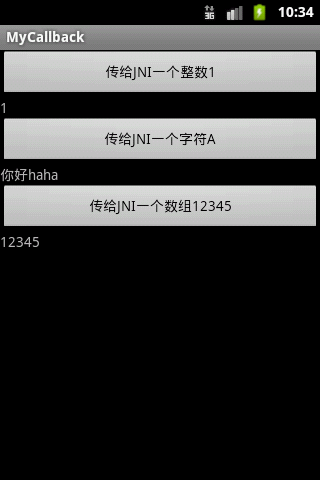
再看看LogCat输出：
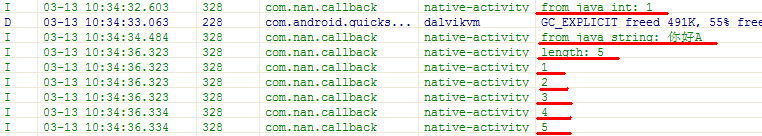
可见两个方向（java<--->JNI）传输的数据都正确。
3.Object-C中调用C++代码
苹果的Objective-C编译器允许用户在同一个源文件里自由地混合使用C++和Objective-C，混编后的语言叫Objective-C++。有了它，你就可以在Objective-C应用程序中使用已有的C++类库。
3.1 Objective-C和C++混编的要点
在 Objective-C++中，可以用C++代码调用方法，也可以从Objective-C调用方法。在这两种语言里对象都是指针，可以在任何地方使用。例 如，C++类可以使用Objective-C对象的指针作为数据成员，Objective-C类也可以有C++对象指针做实例变量。下例说明了这一点。
1. /* Hello.mm
2. * Compile with: g++ -x objective-c++ -framework Foundation Hello.mm -o hello
3. */
4.
5. #import
6. class Hello {
7. private:
8. id greeting_text; // holds an NSString
9. public:
10. Hello() {
11. greeting_text = @"Hello, world!";
12. }
13. Hello(const char* initial_greeting_text) {
14. greeting_text = [[NSString alloc] initWithUTF8String:initial_greeting_text];
15. }
16. void say_hello() {
17. printf("%s\n", [greeting_text UTF8String]);
18. }
19. };
20.
21. @interface Greeting : NSObject {
22. @private
23. Hello *hello;
24. }
25. - (id)init;
26. - (void)dealloc;
27. - (void)sayGreeting;
28. - (void)sayGreeting:(Hello*)greeting;
29. @end
30.
31. @implementation Greeting
32. - (id)init {
33. if (self = [super init]) {
34. hello = new Hello();
35. }
36. return self;
37. }
38. - (void)dealloc {
39. delete hello;
40. [super dealloc];
41. }
42. - (void)sayGreeting {
43. hello->say_hello();
44. }
45. - (void)sayGreeting:(Hello*)greeting {
46. greeting->say_hello();
47. }
48. @end
49.
50. int main() {
51. NSAutoreleasePool *pool = [[NSAutoreleasePool alloc] init];
52.
53. Greeting *greeting = [[Greeting alloc] init];
54. [greeting sayGreeting]; // > Hello, world!
55.
56. Hello *hello = new Hello("Bonjour, monde!");
57. [greeting sayGreeting:hello]; // > Bonjour, monde!
58.
59. delete hello;
60. [greeting release];
61. [pool release];
62. return 0;63. } 正如你可以在OC接口中声明C结构一样，你也可以在OC接口中声明C++类。跟C结构一样，OC接口中定义的C++类是全局范围的，不是OC类的内嵌类（这与标准C（尽管不是C++）提升嵌套结构定义为文件范围是一致的）。
为了允许你基于语言变种条件化地编写代码，OC++编译器定义了__cplusplus和__OBJC__预处理器常量，分别指定C++和OC。如前所述，OC++不允许C++类继承自OC对象，也不允许OC类继承自C++对象。
1. class Base { /* ... */ };
2. @interface ObjCClass: Base ... @end // ERROR!
3. class Derived: public ObjCClass ... // ERROR!与 OC不同的是，C++对象是静态类型的，有运行时多态是特殊情况。两种语言的对象模型因此不能直接兼容。更根本的，OC和C++对象在内存中的布局是互不 相容的，也就是说，一般不可能创建一个对象实例从两种语言的角度来看都是有效的。因此，两种类型层次结构不能被混合。
你可以在OC类内部声明C++类，编译器把这些类当作已声明在全局名称空间来对待。就像下面：
1. @interface Foo {
2. class Bar { ... } // OK
3. }
4. @end
5.
6. Bar *barPtr; // OKOC允许C结构作为实例变量，不管它是否声明在OC声明内部。
1. @interface Foo {
2. struct CStruct { ... };
3. struct CStruct bigIvar; // OK
4. } ... @end
Mac OS X 10.4以后，如果你设置fobjc-
call-cxx-cdtors编译器标志，你就可以使用包含虚函数和有意义的用户自定义零参数构造函数、析构函数的C++类实例来做为实例变量
（gcc-4.2默认设置编译器标志fobjc-call-cpp-cdtors）。OC成员变量alloc完以后，alloc函数会按声明顺序调用构造
器。构造器使用公共无参数恰当的构造函数。OC成员变量dealloc之前，dealloc方法按声明顺序反序调用调用析构函数。
OC没有名称空间得概念。不能在C++名称空间内部声明OC类，也不能在OC类里声明名称空间。
OC类，协议，分类不能声明在C++ template里，C++
template也不能声明在OC接口，协议，分类的范围内。
但是，OC类可以做C++ template的参数，C++ template参数也可以做OC消息表达式的接收者或参数（不能通过selector）。
3.2 C++词汇歧义和冲突
OC头文件中定义了一些标识符，所有的OC程序都必须包含，这些标识符识有id，Class，SEL，IMP和BOOL。
OC方法内，编译器预声明了标识符self和super，就像C++中的关键字this。跟C++的this不同的是，self和super是上下文相关的；除OC方法外他们还可以用于普通标识符。
协议内方法的参数列表有5个上下文相关的关键字（oneway，in，out，inout，bycopy）。这些在其他内容中不是关键字。
从 OC程序员的角度来看，C++增加了不少新的关键字。你仍然可以使用C++的关键字做OC selector的一部分，所以影响并不严重，但你不能使用他们命名OC类和实例变量。例如，尽管class是C++的关键字，但是你仍然能够使用 NSObject的方法class：
1. [foo class]; // OK然而，因为它是一个关键字，你不能用class做变量名称：
1. NSObject *class; // Error
OC里类名和分类名有单独的命名空间。@interface foo和@interface(foo)能够同时存在在一个源代码中。OC++里，你也能用C++中的类名或结构名来命名你的分类。
协议和template标识符使用语法相同但目的不同：
1. id foo;
2. TemplateType bar; 为了避免这种含糊之处，编译器不允许把id做template名称。最后，C++有一个语法歧义，当一个label后面跟了一个表达式表示一个全局名称时，就像下面：
1. receiver selector: ::global_c++_name;第一个冒号后面需要空格。OC++有类似情况，也需要一个空格：
1. label: ::global_name = 3;3.3 限制
OC++ 没有为OC类增加C++的功能，也没有为C++类增加OC的功能。例如，你不能用OC语法调用C++对象，也不能为OC对象增加构造函数和析构函数，也不 能将this和self互相替换使用。类的体系结构是独立的。C++类不能继承OC类，OC类也不能继承C++类。另外，多语言异常处理是不支持的。也就 是说，一个OC抛出的异常不能被C++代码捕获，反过来C++代码抛出的异常不能被OC代码捕获。